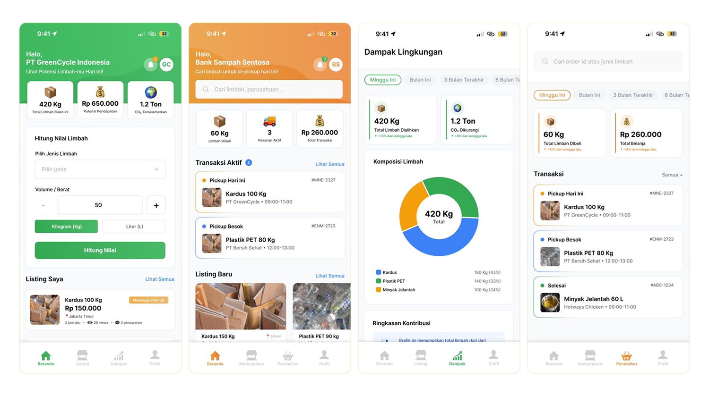

The inefficiency of waste
Indonesia generates 36.9M tons of waste per year, but only 32.3% is managed. The tragic irony: companies pay to throw away recyclables that could be sold, simply because they can't find reliable buyers. Digitizing waste supply chains can improve efficiency by up to 40% (Waste4Change).
"75% of small business owners have no fixed waste collector partner — they have no idea where their recyclables actually go."
"88% of collectors face inconsistent market prices, and 75% struggle to find reliable new waste sources — they're flying blind every day."
Who are we designing for?
Dinda, 34
Laundry owner, Jakarta
- △ No fixed collector partner. Pays extra fees to dispose of plastic + water waste that could be sold.
- △ Wants to sell waste easily, earn extra income, and contribute to sustainable business practices.
- △ Needs: collector finder, live market price, auto pickup scheduling, environmental impact report.
Pak Joko, 48
Independent collector, Bekasi
- △ Travels far without price certainty. No real-time market data. Hard to find consistent sorted waste sources.
- △ Wants a transparent digital platform to find nearby listings, negotiate prices, and track pickups.
- △ Needs: nearby stock info (93%), digital price negotiation (73%), pickup tracking (53%).
Validating the assumption
31 respondents — 16 pelaku usaha (penghasil limbah) · 15 pengepul/pengelola limbah · Jabodetabek area
90%
of business owners want a nearby collector finder as the top feature
95%
of pelaku usaha would try the platform if the process is easy and informative.
93%
of collectors say nearby stock info + live pricing is the most critical feature.
85%
of business owners lack time and info on proper waste management.
88%
of collectors face inconsistent market prices with no reliable reference.
40%
efficiency gain possible by digitizing waste supply chains (Waste4Change).
How we got there
Empathize
In-depth interviews with business owners and collectors. Online questionnaire across Jabodetabek. Observation of waste handling behavior at end of operational hours.
Define
4 core pain points identified: no direct B2B connection, zero price transparency, no waste value tool, no readable environmental reporting. These directly mapped to EcoSync's feature set.
Ideate
Brainstorming + user flow mapping. Prioritized 4 features: waste value calculator, live price dashboard, collector connection system, environmental impact report.
Prototype
Lo-fi wireframe (navigation structure, role separation). Then high-fidelity with two distinct visual identities: green for pelaku usaha (sustainability), orange for pengepul (action + movement).
Test + iterate
Feedback sessions with pengepul, pelaku usaha, and an environmental consultant. Fixed confusing terminology on the calculator flow to use standard market terms.
Key design decisions
The "why" behind the screens.
Two separate visual identities: green vs orange
Rather than one neutral UI, we split the experience by role. Green signals sustainability and responsibility for pelaku usaha. Orange signals urgency and action for pengepul who are constantly on the move. Based on Norman's design perception theory, color builds emotional connection between user and system.
Auto waste value calculator as the entry hook
43% of business owners have never calculated financial loss from throwing waste away. The calculator is the first interactive feature on the dashboard, it immediately converts an abstract problem ("I have waste") into a concrete number ("you're losing Rp X/month").
Real-time price transparency as a trust builder
Both sides of the market distrust each other because neither has a price reference. Surfacing live market prices neutralizes negotiation anxiety, collectors can bid with confidence, producers can verify they're not being lowballed.
CSR report as a downloadable PDF
For corporate F&B chains, sustainability managers need tangible reports for stakeholders. A downloadable PDF instantly fits into their existing workflow, providing verified impact metrics without forcing executives to log into the app.
Feature breakdown by role
🏪 Penghasil Limbah
- Dashboard: monthly waste total, income potential, carbon reduction, waste calculator
- Jual limbah: upload waste data (type, volume, location), get matched
- Dampak lingkungan: CO₂ reduced, waste diverted, CSR report download (PDF)
- Order tracking: real-time pickup status with verification code
🚛 Pengepul (Collector)
- Nearby waste: browse active waste listings nearby with distance & volume filters
- Negotiation: digital offer system with live market price benchmarks for transparency
- Pickup route: optimized multi-stop route planning to save fuel and time
- Transaction logs: history of verified pickups, earnings, & material types collected
Final polished UI

Outcome + reflection
User validation results
95% of pelaku usaha respondents said they'd try the platform if it's easy and informative. 93% of collectors flagged nearby stock info + live pricing as essential. Both signals confirm EcoSync's core thesis directly matches user pain points.
What I'd do differently
Formal usability testing wasn't completed, I'd make that non-negotiable next time, especially for the collector-side flow which is more complex. Recruiters respect self-awareness.
What I learned
Designing for two radically different user types in the same product taught me how much color and information hierarchy can do the work of onboarding, without a single tutorial screen.